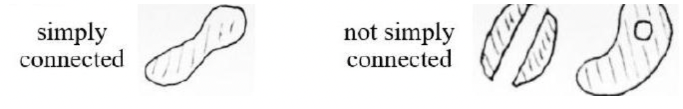

Vector Fields & Line Integrals of Vector Fields
Contents
Vector Fields & Line Integrals of Vector Fields#
Scalar and Vector Fields: Definitions#
Consider a function \(f(x, y, z)\) where \(x, y, z\) are coordinates in space. The function assigns a value of \(f\) to every point in a 3D region; \(f\) can be called a scalar field.
A \(2 \mathrm{D}\) vector field is a vector function \(\overrightarrow{\boldsymbol{F}}\) that assigns to each point \((x, y)\) a \(2 \mathrm{D}\) region a \(2 \mathrm{D}\) vector \(\overrightarrow{\boldsymbol{F}}(x, y)=M(x, y) \mathbf{i}+N(x, y) \mathbf{j}\).
A 3D vector field is a vector function \(\overrightarrow{\boldsymbol{F}}\) that assigns to each point \((x, y, z)\) a 3D region \(E\) a 3D vector \(\overrightarrow{\boldsymbol{F}}(x, y, z)=M(x, y, z) \mathbf{i}+N(x, y, z) \mathbf{j}+P(x, y, z) \mathbf{k}\).
The component functions \(M, N, P\) are scalar fields.
A vector field may also be denoted \(\overrightarrow{\boldsymbol{F}}(\overrightarrow{\boldsymbol{r}})\) where \(\overrightarrow{\boldsymbol{r}}=\langle x, y\rangle\left(\right.\) in \(\left.\boldsymbol{R}^{2}\right)\) or \(\overrightarrow{\boldsymbol{r}}=\langle x, y, z\rangle\) (in \(\boldsymbol{R}^{3}\) ) is the position vector of point \((x, y)\) or \((x, y, z)\) respectively.
Vector fields may be represented graphically by sketching some of these vectors. (Sometimes the lengths of the vectors are scaled.)
Gradient Fields#
Recall from PD3 that for a (scalar) function \(f(x, y, z)\), the gradient vector is
and is orthogonal to the level surfaces \(f(x, y, z)=k\). \(\vec{\nabla} f\) is the gradient field of \(f\).
Work Done#
Suppose a force field \(\overrightarrow{\boldsymbol{F}}(\overrightarrow{\boldsymbol{r}})=\langle M(x, y, z), N(x, y, z), P(x, y, z)\rangle\) moves a particle along a smooth curve \(C\) defined by \(\overrightarrow{\boldsymbol{r}}=\langle x(t), y(t), z(t)\rangle\).
Consider a short element of \(C\) at position \(\overrightarrow{\boldsymbol{r}}\). The vector along this element is \(d \overrightarrow{\boldsymbol{r}}\). The work done in moving the particle along this element is \(d W=\overrightarrow{\boldsymbol{F}} \cdot d \overrightarrow{\boldsymbol{r}}\).
So the total work done by \(\overrightarrow{\boldsymbol{F}}\) in moving the particle along \(C\) is \(W=\int_{C} \overrightarrow{\boldsymbol{F}} \cdot d \overrightarrow{\boldsymbol{r}}\).
This is an example of a line integral of a vector field.
Notes:
Strictly speaking the vector line integral is the integral of the scalar tangential component of the vector field along the curve (see textbooks).
The value depends on the orientation of the curve: If \(C\) is the curve from \(A\) to \(B\) and we notate as \(-C\) the curve from \(B\) to \(A\) then \(\int_{-C} \overrightarrow{\boldsymbol{F}} \cdot d \overrightarrow{\boldsymbol{r}}=-\int_{C} \overrightarrow{\boldsymbol{F}} \cdot d \overrightarrow{\boldsymbol{r}}\)
A path can be divided into pieces: \(\quad \int_{C_{1}+C_{2}} \overrightarrow{\boldsymbol{F}} \cdot d \overrightarrow{\boldsymbol{r}}=\int_{C_{1}} \overrightarrow{\boldsymbol{F}} \cdot d \overrightarrow{\boldsymbol{r}}+\int_{C_{2}} \overrightarrow{\boldsymbol{F}} \cdot d \overrightarrow{\boldsymbol{r}}\)
To evaluate the integral#
a) Find a parameterization \(\overrightarrow{\boldsymbol{r}}(t)\) for the curve (if not given)
b) Calculate \(\overrightarrow{\boldsymbol{F}}, \frac{d \vec{r}}{d t}\) and \(\overrightarrow{\boldsymbol{F}} \cdot \frac{d \vec{r}}{d t}\) in terms of the parameter \(t\).
c) Evaluate the line integral in terms of the parameter \(t: \quad \int_{C} \overrightarrow{\boldsymbol{F}} \cdot d \overrightarrow{\boldsymbol{r}}=\int_{C}\left(\overrightarrow{\boldsymbol{F}} \cdot \frac{d \overrightarrow{\boldsymbol{r}}}{d t}\right) d t\).
Alternative Notation#
For \(\overrightarrow{\boldsymbol{r}}=\langle x(t), y(t), z(t)\rangle\), we have \(d \overrightarrow{\boldsymbol{r}}=\langle d x, d y, d z\rangle=\left\langle\frac{d x}{d t}, \frac{d y}{d t}, \frac{d z}{d t}\right\rangle d t\), so
where the last step is a shorthand notation, and is known as the differential form of a line integral.
Further Definitions#
A curve is oriented if we have chosen a direction of travel on it. When a curve is given parametrically (including as a vector-valued function), we assume we travel from the smallest to the largest allowed value of the parameter.
A closed curve (or loop) is an oriented curve that ends at the same point where it started.
The positive orientation of a closed curve \(C\) is such that when we move along \(C\), the region inside \(C\) is on the left - see figure below.
A curve in \(\boldsymbol{R}^{2}\) is simple if it does not cross itself. (See figure below - from Thomas Fig. 16.23.)

Circulation#
If \(\overrightarrow{\boldsymbol{F}}\) represents the velocity field of a fluid flowing through a region in space then \(\int_{C} \overrightarrow{\boldsymbol{F}} \cdot d \overrightarrow{\boldsymbol{r}}\) gives the flow of the fluid along path \(C\).
A line integral around a closed curve is often notated \(\oint\).
On a closed path, \(\oint_{C} \overrightarrow{\boldsymbol{F}} \cdot d \overrightarrow{\boldsymbol{r}}\) is called the circulation.
Circulation serves as a measure of a vector field’s tendency to rotate in a manner consistent with the orientation of the curve.